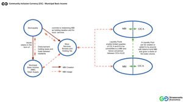

Municipal Basic Income (MBI) via CIC
A municipality, town or local administration is an ideal issuer and anchor for a basic/guaranteed income because the have the means to back it and the intention to build sustainable and thriving local markets– Such a Municipal Basic Income (MBI) can in turn act as a growth medium and network token for Community Inclusion Currencies which allow local groups and businesses to form strong local markets through the MBI network.
In its simplest form a municipality creates a token which is distributed to residents and local projects – and taxed and redistributed as a basic income for those active in the network. This MBI would be backed by the holding tax itself and as well local services offered by the municipality (like 50% off public transport or health services). This is similar to Sarafu in Kenya whose supply is set by the target population – taxed and redistributed. The tax and redistribution incentivizes trade and discourages hoarding.
Businesses and groups of residents can create a Community Inclusion Currency against their production (like a voucher) and offer some of these CICs in exchange for the MBI – in order to support the municipality. This is a measurable form of corporate social responsibility (CSR) and social enterprise.
Businesses and groups of residents can create a Community Inclusion Currency against their production (like a voucher) and offer some of these CICs in exchange for the MBI – in order to support the municipality. This is a measurable form of corporate social responsibility (CSR) and social enterprise.
This allows business and communities to transparently and measurably connect their vouchers to the greater social service network formed by the MBI. Online marketplace could feature these supporting businesses as a way to drive traffic to them.
The initial supply and taxes collected from holding fees on balances of the MBI could also be used to aid community support networks and for local programs like Food Forests.
A municipality creating such a MBI would have to create a contract against its redemption as well as taxation and redistribution. This contract could be voted on signed and scanned as a pdf and fixed to the MBI token on a blockchain (low-tech).
Supporting business could in turn create their own CIC as a claim against their production (again in a signed contract) and place those CICs into liquidity pools that contain both their contribution of CIC (vouchers) and an amount of the MBI in order to enable traceable exchange between the two.
This means that people could keep their municipality economies thriving by accepting and trading a MBI which can be exchanged in limited amounts for business vouchers (ala liquidity pools with CICs)
While in Kenya we rely on Humanitarian organizations to supply a basic income token - a municipality, or local administration would be a wonderful anchor for community health in this way. The possibilities of MBIs combined with CICs are profound and life affirming. Consider the value in decentralized, municipally supported economies (networks of MBIs) - building and supporting local as well as regional or National economies.
While in Kenya we rely on Humanitarian organizations to supply a basic income token - a municipality, or local administration would be a wonderful anchor for community health in this way. The possibilities of MBIs combined with CICs are profound and life affirming. Consider the value in decentralized, municipally supported economies (networks of MBIs) - building and supporting local as well as regional or National economies.